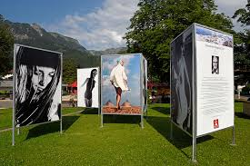
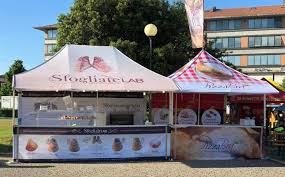
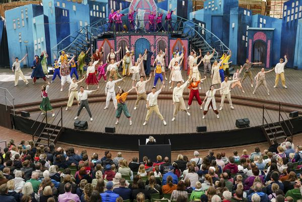
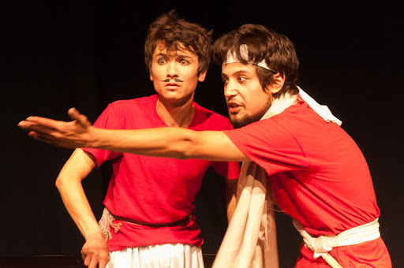
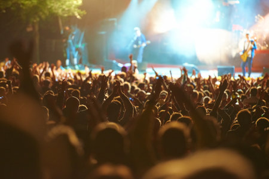

Tauchen Sie ein in die Welt des Wissens und entdecken
Sie faszinierende Ausstellungen und Päsentationen. Von wissenschaftlichen
Forschungsprojekten über kulturelle Ausstellungen gibt es viel zu entdecken
und zu erfahren. Startzeit: 10.00 Uhr
Wir laden alle kleinen Besucher herzlich ein, sich beim
Kinderschminken zu verwandeln und in eine Welt voller Fantasie einzutauchen!
Diese unterhaltsame Aktivität bietet Kindern die Möglichkeit, sich mit fabenfrohen
Gesichtsbemalungen und kreativen Designs zu verschönern. Startzeit: 14.00 Uhr

Probieren Sie eine Vielzahl von köstlichen Speisen und Getränken aus
aller Welt an unseren Food-Ständen. von traditionellen Gerichten bis hin zu exotischen
Delikatessen gibt es für jeden Geschmack etwas zu entdecken. Startzeit: 11.00 Uhr

Erleben Sie dir Schönheit und Anmut verschiedener Tanzstile. Von traditionellen Tänzen bis hin zu modernen Choreographien
gibt es eine Vielzahl von Darbietungen, die Sie begeistern werden. Startzeit: 14.00 Uhr

Tauchen Sie ein in die fesselnde Welt des Theaters mit unserer besonderen Theateraufführung.
Seien Sie dabei, wenn die Bühne zum Leben erwacht und uns mit ihrer Magie verzaubert. Startzeit 16.30 Uhr

Genießen Sie eine Vielzahl von musikalischen Darbietungen lokaler Talente
und Bands. Tanzen Sie zu mitreißender Musik und lassen Sie sich von den Klängen
verschiedener Genres verzaubern. Startzeit: 19.00 Uhr